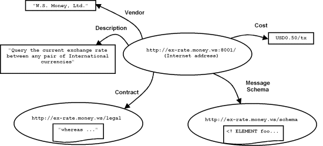

|
Wednesday June 13 2001 Powering Web Services Through Metadata How RDF could help Web Services standards One of the most important requirements for highly automated Web Services is a rich description mechanism. In order to narrow down the negotiation and discovery of services that fit a particular contractual and technical profile, this information needs to be made available in an accessible way for machine processing. There have been several initiatives to develop systems for encoding and querying such Web Service descriptions, among them the Web Services Description Language (WSDL) and Universal Description, Discovery, and Integration (UDDI). These data formats define a vocabulary for service descriptions, automation, rules, and processing, and perhaps the quickest route towards practical implementation of Web Services is to take advantage of RDF: the W3C's system for managing such vocabularies. This paper discusses how to use RDF for rapid implementation of Web Services based on the emerging standards such as WSDL, UDDI, and ebXML. Introduction Web Services are just part of the evolution of component development technology. The two key aspects of component systems are the ability to plug in required software functions from heterogeneous bits of code, and the ability to invoke these functions across platform, network, language, and other such boundaries. It has long been recognized that metadata is one of the most important aspects of components systems. Developments such as interface registries from COM, and interface repositories and meta-object facilities from the OMG are considered essential to component reuse and management. Web Services bring component technologies to the Web, with HTTP transport and XML-formatted payloads. Metadata is just as important for Web Services as it is for other component systems. This is clear enough by the great attention already lavished upon UDDI in these early stages, but as they were developing system for representing structured and semi-structured data in XML, the W3C also came up with a system for managing structured and semi-structured metadata: Resource Description Framework (RDF). Due to its simplicity and usefulness with XML, RDF has steadily increased in adoption, and currently there is no reason for it not to be considered as a metadata management facility for Web Services. RDF itself is not introduced in this paper, but several resources are cited, which provide the necessary background. Motivating RDF for Web Services First of all, let us consider the basics of Web Services discovery and description. Once a vendor implements a service and wishes to make it available for remote use, the first order of business is to describe the service. The important elements of the description of the service include:
Some of these description items are simple values, such as the vendor ID and the prose description. Some of them are probably references to distinct documents, either machine readable, such as the message formats, which might be in the form of an XML schema (or DTD, Schematron, RELAX, TREX, Examplotron, etc), or human readable, such as the service contract. One way to view this collection of data is illustrated in the diagram below. In the fictional Web Service illustrated above, the vendor, W. S. Money, Ltd. offers a current exchange rate query service for 50 cents (US) per transaction. The service can be accessed by sending an HTTP request to the web server at http://ex-rate.money.ws on port 8001. The XML schema for the HTTP message to be sent to this server can be downloaded from http://ex-rate.money.ws/schema, and the service contract to which all customers must agree can be downloaded from http://ex-rate.money.ws/contract. These facts are expressed in the diagram by labeled arcs from a central circle. This central circle is a resource representing the abstract Web Service. The end-points of the arcs indicate the objects of the facts. They could be literal strings (represented by rectangles); for instance, the fact that the 'vendor' of the abstract Web Service is given by the string 'W.S. Money, Ltd.'. Or they could be other abstract or retrievable resources (represented by ovals); for instance, the fact that the 'message schema' of the Web Service is a resource located at the URL http://ex-rate.money.ws/schema, which, when downloaded happens to start with the string '<!ELEMENT foo', which you might recognize as the beginning of an XML document type definition (DTD). The typical group of descriptions, shown above, demonstrate why there's a role for RDF definitions. RDF allows the architect to formally define the various nodes and arcs in the above diagram in a standard way. Since RDF relies on uniform resource identifiers (URIs) for resource identity, the message schema and contract fit naturally into an RDF form, in order to be managed naturally by RDF and Web Services tools. Working with WSDL, UDDI, ebXML, etc. You will, of course, recognize from the example above all the elements of description. These are all, in various form, elements of WSDL, UDDI, and ebXML registry/repository (reg-rep). Of course, rather than using RDF, these Web Services specifications use specialized XML formats to represent the description. Currently vendors are working to develop query and management tools for Web Services descriptions based on these customized formats, but there are many RDF tools for management and query of RDF-based metadata already available (see the section entitled 'Resources' at the end of the article). Another reason for using RDF to augment WSDL, UDDI, and ebXML is resource management. One of the differences between the basic description example presented above, and the practice of Web Services formats such as WSDL, UDDI, ebXML is that the latter make some effort to pack human and machine readable documents right alongside the other description elements. This can be problematic when managing both distinct human and machine-readable documents. In the case of human-readable documents there is no substitute for having humans, and in particular legal counsel, attendant at every stage of service negotiation. Practically, there is a long way to go before automatic negotiation is a sensible option, and the best approach to Web Services discovery is to have agents collate and filter the available information, in preparation for human decision-makers. In the case of machine-readable documentation such as schemas, modularity is often an important part of high-quality software design of such systems and embedding interfaces with other metadata has the danger of minimizing reuse and manageability. Schemas should be discrete, first-class documents that can be accessed by separate systems with a guarantee of integrity. It is currently possible to take advantage of RDF for these very reasons. The 'Resources' section beneath points to articles and presentations, which include examples, sample transforms and schemas for conversion from WSDL, UDDI, and ebXML models to RDF. Because of RDF's highly flexible facilities for XML serialization, most such conversions are almost trivial. WSDL expressed in RDF looks almost exactly like WSDL in its original format. There is also an effort underway to expand and formalize such conversions, in particular the RDF/Web Services mailing list. This would make it easy to continue to exchange information using Web Services formats but manage the information using basic RDF and XML databases. Available RDF tools include schema design tools, diagramming tools, efficient search and query, inference engines, and even basic language tools such as terminology dictionaries and word classification systems (which can act as dictionaries and thesauruses). Using RDF, it is already feasible to ensure that someone looking for a 'monetary conversion rate' Web Service would successfully find W.S. Money's exchange rate service. Conclusion So why didn't the main Web Services efforts use RDF? My personal experience in discussions with creators of Web Services specifications is that most were completely unaware of RDF. Most do seem to agree with its value as long as exchange is possible using Web Services XML formats. Certainly there is a great deal of activity, much of which brings together core XML and RDF, and the Web Services that can build on these. The W3C, which developed RDF and has put it to work in areas including privacy preferences and content ratings, has devoted some activity to Web Services. Web Services developers looking for proven tools for rapid deployment of their systems should consider issues of metadata management in general, and should in particular consider RDF for management of Web Services metadata. Resources
|